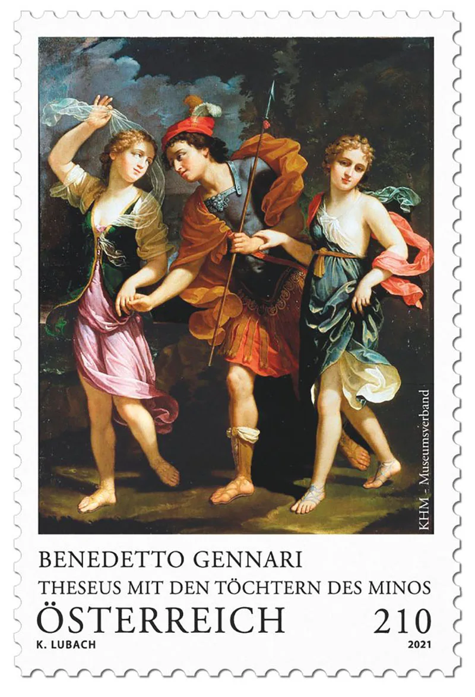
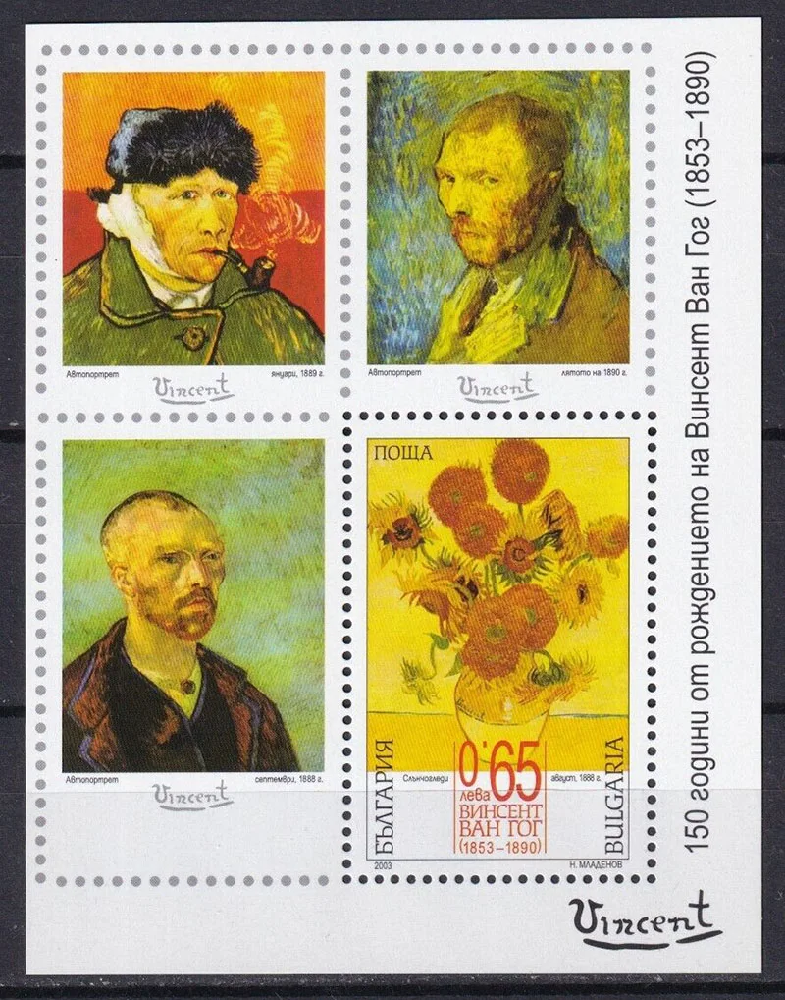
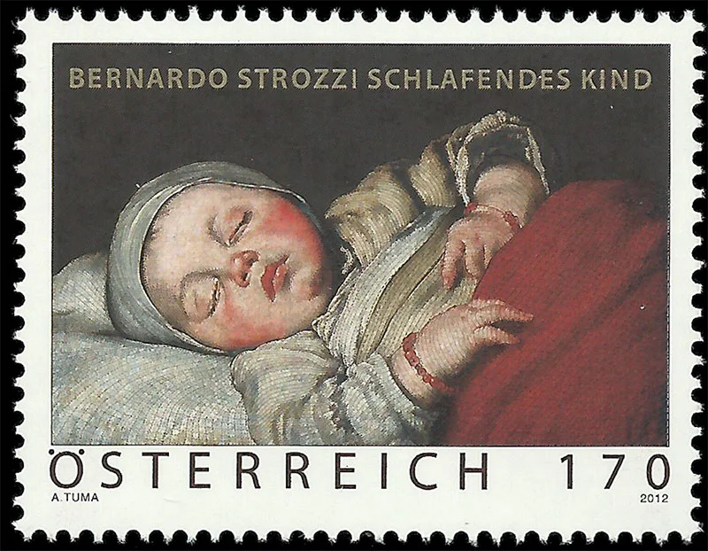
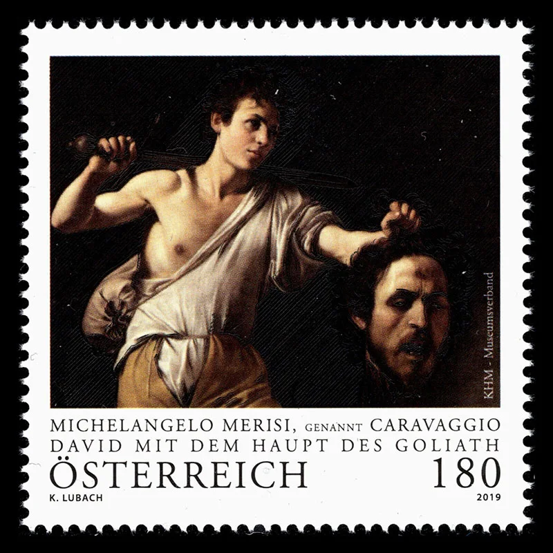
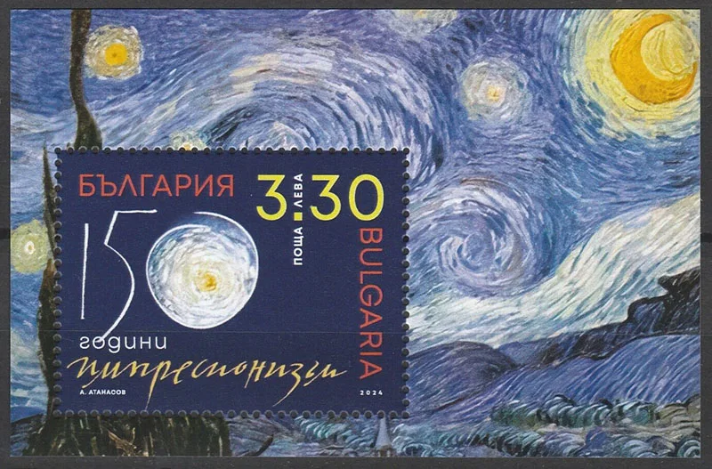
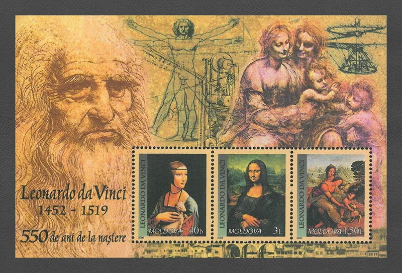
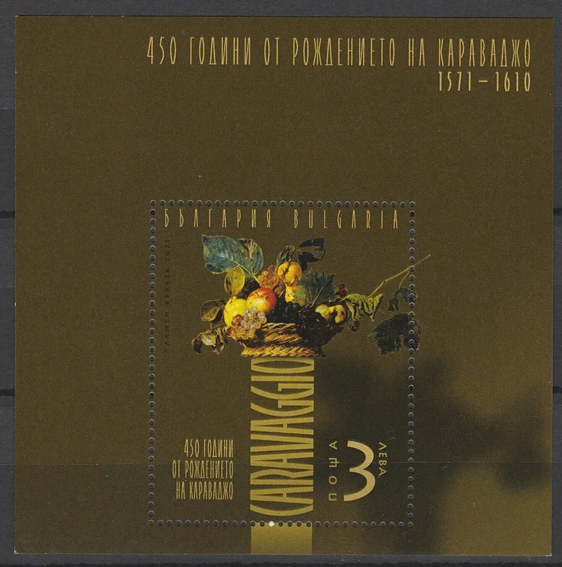

Home / Art Gallery / New Year Art Gallery
New Year Art Gallery
From the original Art on Stamps archive
Let's imagine that we decided at the end of 2024 to give ourselves a nice gift and visit an imaginary museum with the most beautiful stamps, which reproduce famous works of art from all over the world. So let's go in and take a few steps, then sitting comfortably in front of the larger or smaller screens that we have at our disposal.

Austria, 2021, Benedetto Gennari, Theseus with Ariadna and Phedra, Daughters of King Minos

Bulgaria, 2003, Vincent van Gogh. Self-Portraits 1889, 1890, 1888 and Sunflowers
Vincent van Gogh — Self-Portraits and Sunflowers
The artist. Vincent van Gogh (1853–1890) was a Dutch Post-Impressionist painter. During a remarkably productive career he developed an intensely personal language of expressive brushwork, strong outlines and vibrant colour. Although he sold little during his lifetime, his work later became central to the history of modern art.
The self-portraits. Van Gogh painted numerous self-portraits, especially in Paris and Saint-Rémy, partly because he could study his own face without paying a model. Changes in his expression, clothing, palette and brushwork make these pictures a visual record of artistic experimentation, rather than simply a series of likenesses. The Bulgarian stamps identify portraits from 1888, 1889 and 1890.
The Sunflowers. Van Gogh's sunflower paintings, particularly those made in Arles in 1888–1889, are celebrated for their many shades of yellow and thick, energetic paint. The flowers at different stages of bloom and decay can also suggest the passage of time. On a stamp, their striking shapes and colours remain recognisable even at a small scale.

Bernardo Strozzi — Sleeping Child
This Austrian stamp (2012) reproduces Sleeping Child by Bernardo Strozzi (1581–1644), a Genoese painter who later worked in Venice. His Baroque style is known for warm colours, vivid observation and expressive contrasts of light and shadow. The baby's peaceful face, softly modelled skin and folded cloth make this intimate subject especially moving.

Caravaggio — David with the Head of Goliath
The Austrian stamp (2019) reproduces David with the Head of Goliath by Michelangelo Merisi, called Caravaggio (1571–1610). The young David holds the severed head of the giant, but the mood is reflective rather than triumphant. Caravaggio's dramatic illumination against a dark background—his celebrated chiaroscuro—gives the biblical scene unusual psychological intensity. Caravaggio painted more than one version of this subject.

Vincent van Gogh — The Starry Night
The background of this Bulgarian souvenir sheet reproduces The Starry Night (1889), painted by Vincent van Gogh during his stay at Saint-Rémy-de-Provence. The swirling night sky, brilliant stars and dark cypress are transformed by rhythmic brushstrokes and heightened colour. Van Gogh was a Post-Impressionist, so this painting also illustrates how the innovations of Impressionism led to more personal artistic languages.
Art on stamps: Baroque painting, Van Gogh and the legacy of Impressionism
Impressionism and Its Legacy
In 2024 the art world marked 150 years since the first independent exhibition of the artists later called Impressionists, held in Paris in 1874. Their visible brushwork, modern subjects and interest in changing light transformed painting.
The movement. Claude Monet, Pierre-Auguste Renoir, Edgar Degas, Berthe Morisot and Camille Pissarro were among the central figures associated with Impressionism. They often chose everyday life, landscapes and modern urban scenes rather than grand historical subjects. The movement's name came from Monet's Impression, Sunrise.
Van Gogh belongs to Post-Impressionism rather than to the original Impressionist group. His Starry Night, reproduced above, shows how their experiments with colour and brushwork developed into a more personal, expressive language.

Leonardo da Vinci — Renaissance Portraits
This Moldovan souvenir sheet celebrates the 550th anniversary of the birth of Leonardo da Vinci (1452–1519), painter, inventor and investigator of nature. The stamps include the famous Mona Lisa and other works associated with Leonardo. His subtle transitions between light and shade—known as sfumato—and his close study of human expression helped shape High Renaissance painting. The sheet also evokes his anatomical studies and notebooks.

Caravaggio — Basket of Fruit
This Bulgarian miniature sheet commemorates the 450th anniversary of Caravaggio's birth (1571–1610). The central image reproduces Basket of Fruit, one of his most celebrated still lifes. Fruit, leaves and wicker are observed with remarkable precision; blemishes and curling foliage suggest that natural beauty is fragile and fleeting. The image shows that Caravaggio's realism was as compelling in everyday objects as in dramatic religious scenes.
Benedetto Gennari II — Theseus, Ariadne and Phaedra
The artist. Benedetto Gennari II (1633–1715) was an Italian Baroque painter from Cento, near Bologna, and a member of the artistic family associated with Guercino. He also worked in England at the court of Charles II and later James II. His paintings combine carefully arranged figures, rich fabrics and theatrical lighting.
The subject. The image evokes the Greek legend of Theseus and the daughters of King Minos of Crete. Ariadne helped Theseus escape the Labyrinth after his victory over the Minotaur, giving him a thread with which to find his way out. Phaedra, Ariadne’s sister, later became Theseus’s wife. The story links love, heroism and tragedy, themes that appealed strongly to Baroque painters.
On the stamp. The Austrian issue of 2021 brings a mythological composition into the small format of a postage stamp. Look at the gestures and the relationship between the figures: storytelling is as important here as portraiture.